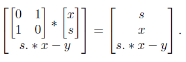

Graph-matrix calculus (GPH), Legendre-Fenchel conjugate
gphstar = gph_lft(gph,check)
matrix. A function in GPH matrix form.
Boolean. To check graph structure (disabled for benchmarking)
matrix. The conjugate of the function gph, in GPH matrix form.
Computes the Legendre-Fenchel conjugate of a given GPH function. For a convex PLQ function f with GPH matrix [x;s;y], the GPH matrix of the conjuagte, f*, is

gph = [-1, 0, 0, 1, 2; ... -1, -1, 0, 0, 2; ... 1, 0, 0, 0, 1]; gphstar = gph_lft(gph), gph_plot(gph, gphstar); |
Bryan Gardiner, University of British Columbia, BC, Canada